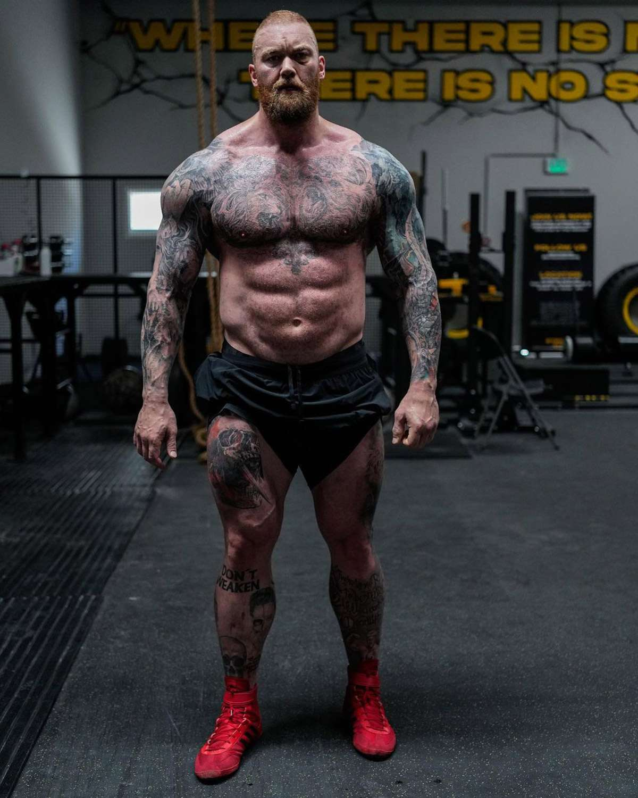

Muscle Growth
Tips for promoting muscle growth.

- Adequate Protein Intake: Protein is essential for muscle repair and growth. Aim for around 1.2 to 2.2 grams of protein per kilogram of body weight per day, depending on your activity level and goals.
- Caloric Surplus: To build muscle, you need to consume more calories than you burn. Calculate your maintenance calories and aim for a slight surplus to support muscle growth.
- Carbohydrates for Energy: Focus on complex carbs like whole grains, fruits, and vegetables to fuel your training sessions.
- Healthy Fats: Include sources of healthy fats like avocados, nuts, and olive oil in your diet to support hormone production and overall health.
- Frequent Meals: Aim for 4-6 smaller meals throughout the day to provide a steady supply of nutrients to your muscles.
Weight Gain
Tips for promoting weight gain.
- Caloric Surplus: Consume more calories than you burn through a combination of increased portion sizes and nutrient-dense foods.
- Protein-Rich Diet: Ensure you meet your protein needs to support muscle growth while gaining weight. Lean meats, dairy, and plant-based protein sources can help.
- Complex Carbs: Incorporate complex carbohydrates like whole grains, potatoes, and legumes to provide energy and prevent excessive fat gain.
- Healthy Fats: Include sources of healthy fats to boost overall calorie intake. Nut butter, fatty fish, and oils are good options.
- Regular Strength Training: Combine your nutrition plan with a structured strength training program to ensure that the additional calories contribute to muscle rather than just fat.
Weight Loss
Tips for promoting weight loss.
- Caloric Deficit: Consume fewer calories than you expend to create a caloric deficit. Track your daily intake and maintain a sustainable deficit.
- High-Protein Diet: Protein helps preserve muscle mass and promotes satiety. Prioritize lean protein sources like chicken, fish, tofu, and legumes.
- Fiber-Rich Foods: Fiber-rich foods like vegetables, fruits, and whole grains can help you feel full and control your appetite.
- Limit Processed Foods: Cut down on sugary and highly processed foods, which can lead to energy crashes and overeating.
- Stay Hydrated: Adequate hydration is essential for proper metabolism. Sometimes thirst is mistaken for hunger, so ensure you're drinking enough water.
Strength Building
Tips for promoting strenght building.

- Protein Timing: Consume protein before and after workouts to support muscle repair and growth.
- Carb Loading: Eat complex carbohydrates before workouts for energy to perform at your best.
- Hydration: Proper hydration is crucial for strength and endurance. Dehydration can lead to decreased performance.
- Micronutrients: Ensure you're getting enough vitamins and minerals through a balanced diet or supplements if necessary, as they play a role in muscle function.
- Rest and Recovery: Nutrition isn't just about what you eat; it's also about recovery. Prioritize quality sleep and consider post-workout nutrition to aid recovery.